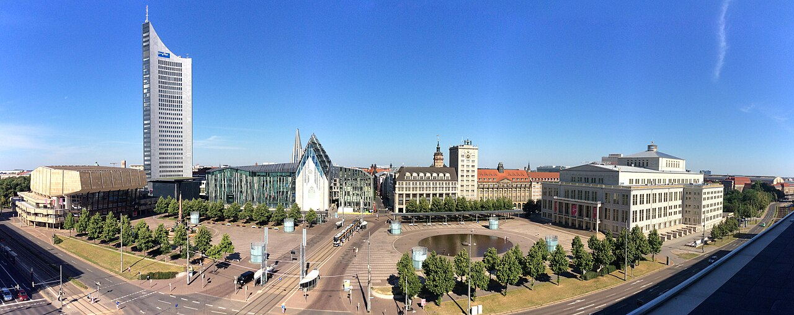

LUKAS Bäcker
Lützowstraße 9–13b
Fußweg in Google MapsMechlerstraße 10
Schön, dass Sie da sind!

 WLANgigacube-EA6A
WLANgigacube-EA6AÜber den Menüpunkt „1 · Live-TV (Länder)“ empfangen Sie deutsche und internationale TV-Sender (Englisch, Französisch, Spanisch, Italienisch, Polnisch, Türkisch, Ukrainisch, Arabisch u. v. m.) direkt hier auf dem Smart-TV – übersichtlich nach Ländern geordnet.
Drücken Sie auf Ihrer Samsung-Fernbedienung einfach die direkte NETFLIX-Taste (oder die 🏠 Home-Taste → Netflix).
🔒 Hinweis für Ihren Aufenthalt: Sie können sich gerne mit Ihrem eigenen Netflix-Profil per QR-Code am TV anmelden. Denken Sie vor dem Check-out einfach ans Abmelden.
QR-Code mit dem Handy scannen, um den Fußweg zu öffnen.
Lützowstraße 9–13b
Fußweg in Google MapsGeorg-Schumann-Straße 50
Fußweg in Google MapsGeorg-Schumann-Straße 105
Fußweg in Google MapsGeorg-Schumann-Straße · Richtung Innenstadt und Wahren. Linie 10 zum Hauptbahnhof · Linie 11 zum Hauptbahnhof und Augustusplatz.
Netzwerk · gigacube-EA6A